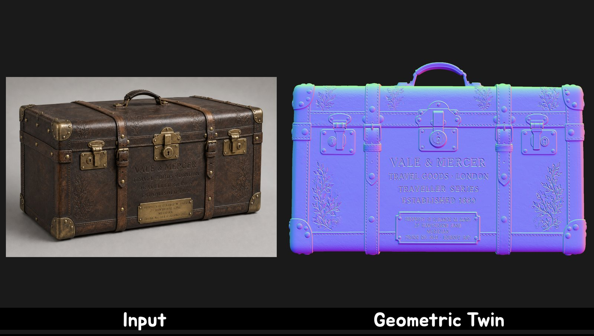
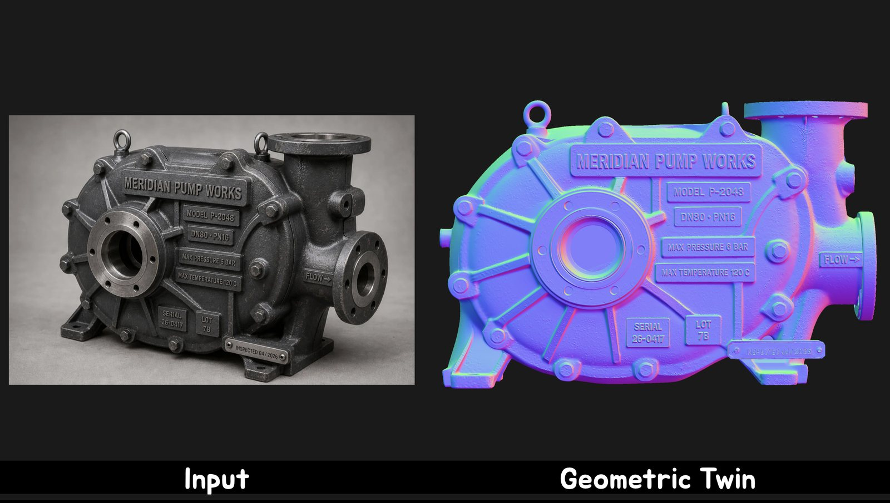
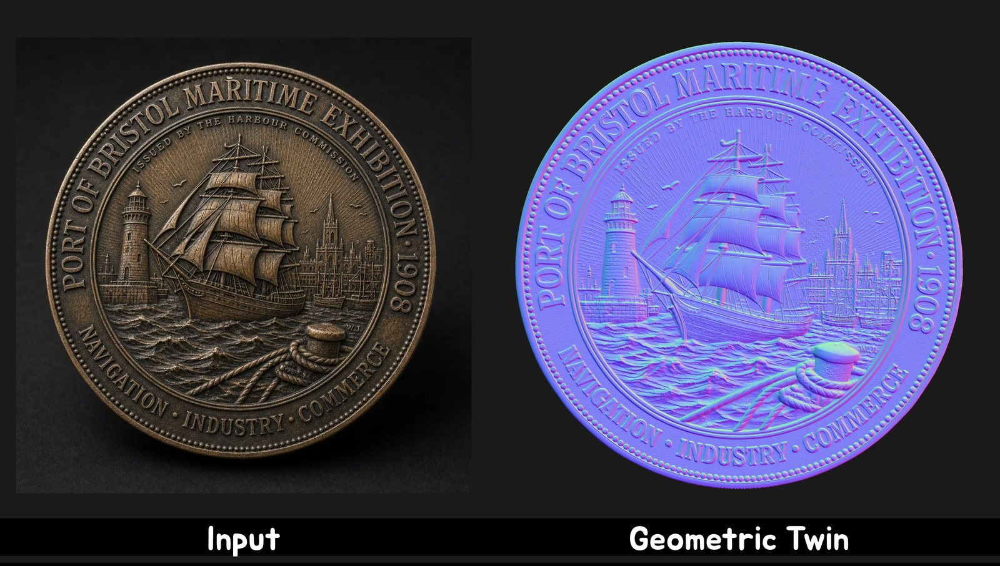
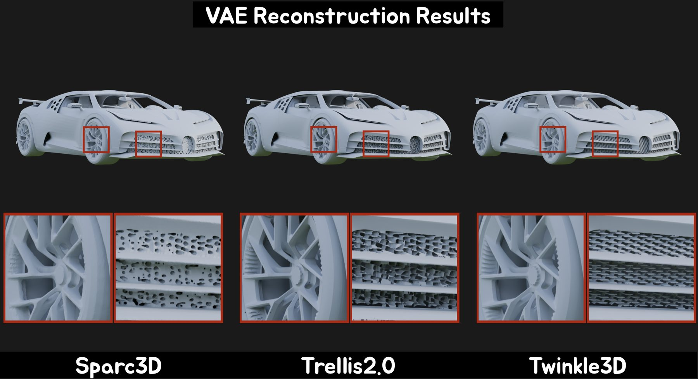
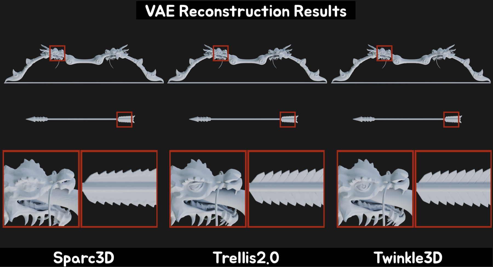
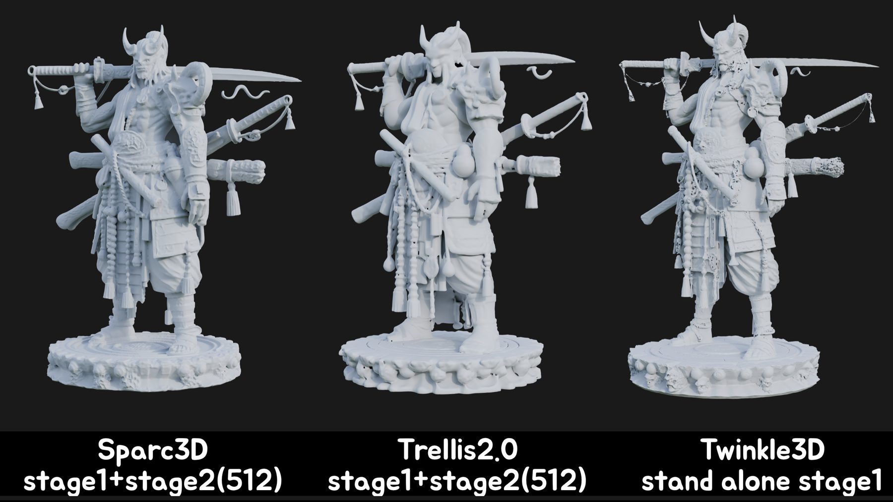
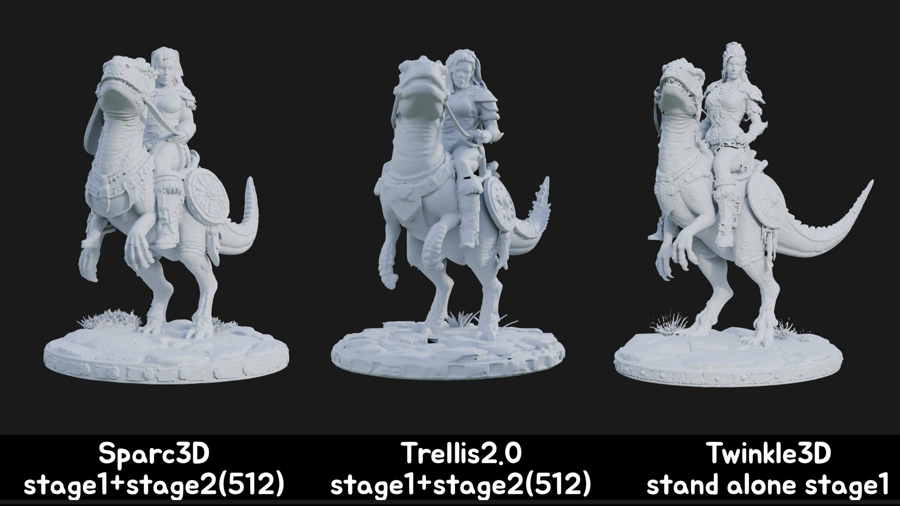
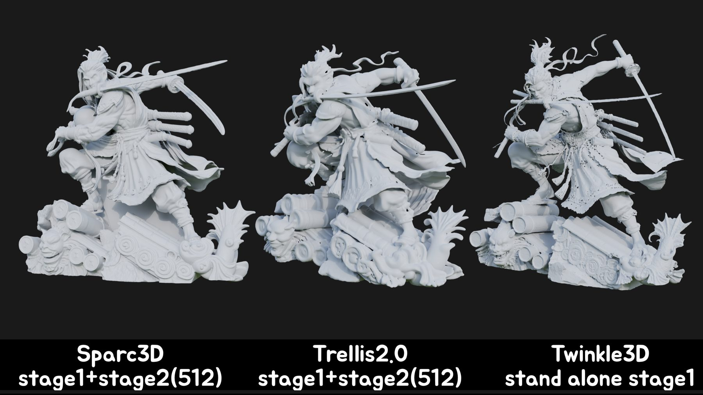

Next generation of image-to-3D geometry · Hi3D 3.0
Twinkle 3D
One image. One geometric twin.
Basically the same used to be the goal. It is now the baseline.
Given one image, today’s models return the right kind of object and the right overall look.
The harder question is whether the mesh is the same object — not a convincing stand-in from the same category.
The difference lives in details that barely change the silhouette yet define the object.
A missing stroke turns one character into another. A slight change in the features turns one face
into another person. Can the inscription on a plaque still be read, word for word? Does an industrial
part keep every hole, thread, and seam exactly where the image shows them? Do logos, grooves, and
repeated structures keep their exact shape, spacing, and alignment?
These features occupy a small fraction of the surface, yet they carry a disproportionate share of the
object’s identity and practical value. The next frontier is therefore not greater visual similarity.
It is exactness: a match that holds at every scale, sustained across millions of
geometric elements. That is the ambition behind Twinkle 3D — one image, one geometric twin.



Hi3D 3.0 versus other image-to-3D systems
Hi3D 3.0 on the left, your pick of the other systems on the right. Drag either mesh to orbit it
on its own, scroll to zoom, or close the lock to rotate both at once. Meshes are untextured
so the comparison is geometry, not shading. Arrow keys step through 25 cases.
01 / 25
Input
Scan all 25 cases
Still frames first — input plus every method — so you can skim without clicking through live meshes.
Click a row to open it in the interactive compare above.
Fidelity begins with the representation
Object-specific fidelity cannot be added back at the end of the pipeline. It has to survive
representation and compression before generation even begins. The geometry representation sets the
ceiling on what a model can express; the VAE decides how much of that survives. Once thin walls,
sharp edges, or fine engravings are discarded during encoding, no downstream model — however large —
can recover information that is no longer there.
Hi3D 1.0, also known as Sparc3D, showed that a compact latent space need not sacrifice geometric
fidelity, reconstructing accurately at 8× compression. Later approaches such as FaithC/Ovoxel, used in
Trellis2, moved past SDF as an intermediate representation and pushed reconstruction further. Two
failure modes still remain: these representations do not inherently guarantee a watertight
mesh, and when a single voxel must encode several disconnected surface patches the local geometry can
exceed its capacity — the multi-shell problem, visible as interpenetrating surfaces,
irregular boundaries, or missing detail in thin walls and tight part junctions. Twinkle 3D addresses both
at the system level, combining 2048³ Ovoxel reconstruction fidelity with watertight, printable output.


At 2048³, scalability is the real challenge
Reconstructing an existing mesh at 2048³ and generating one from a single image are fundamentally
different problems. A single training sample carries roughly 300,000 to 400,000 tokens.
For a conventional DiT, that sequence length drives up computation, memory, inter-device communication,
and data throughput at once — a straightforward implementation spends about ten minutes per training
iteration, which never accumulates the optimization steps convergence needs.
Twinkle 3D was therefore developed as a joint design of the generation network and the training system:
computation reorganized over large geometry-token sequences, and distributed execution tuned at
thousand-GPU scale. That brought an iteration down to roughly 10 seconds, turning 2048³
from a resolution the representation can merely hold into one the model can actually learn at scale.
Fine detail starts in the first stage
Multi-stage generation makes it tempting to assume the first stage only needs the coarse shape right.
Our findings suggest otherwise. Even with a correct silhouette, subtle errors in local curvature,
boundary placement, wall thickness, or part spacing change the foundation every later detail is built on.
Quantization error introduced here is not neutral — it propagates and can be reinforced during refinement,
so a later stage may produce a sharper detail in the wrong position, shape, or proportion.
Single-stage accuracy therefore became a primary objective. Twinkle 3D’s single-stage model surpasses
a pipeline combining first-stage generation with 512³ second-stage refinement.



Beyond shortening the pipeline, this gives the final 2048³ pass a more accurate geometric foundation.
Hi3D 3.0 is more than a resolution upgrade
Only when high-fidelity representation, scalable training, and accurate first-stage generation are
addressed together does 2048³ become more than a nominal figure. On top of that we introduce a more
effective cross-modal interaction mechanism between image and 3D representations, substantially
improving image–3D consistency.
Across challenging inputs we see multiple subjects in large scenes generated with greater completeness;
text, engravings, and fine reliefs better preserved; and local structures on complex objects clearer
and more stable. One image. One geometric twin.